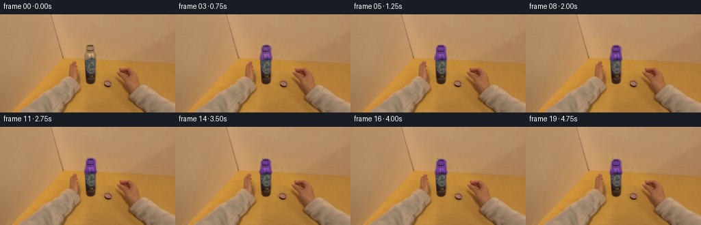
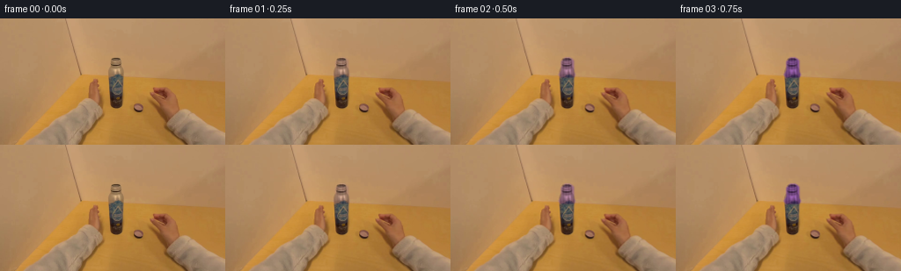

CODING AGENTS AS PIXEL WORLD MODELS
traex/GPT-5.6-Sol · common50_0014
点击播放 · 原生 RGB 像素
逐轮保存的候选
回放视频、检查图与代码变化。
每份候选均可单独播放。实际图片检查记录在下方工具轨迹中。
候选 01播放与检查图
点击播放 · 原生 RGB 像素


展开代码变化
--- 上一保存版本
+++ 本次保存版本
@@ -0,0 +1,186 @@
+"""Generate the requested short egocentric cap-screwing sequence.
+
+The supplied frame is used as the renderer: small, soft optical-flow warps
+move the photographed hand, while a separately composited cap is turned and
+lowered onto the stationary bottle. This retains the lighting, grain, and
+perspective of the source rather than replacing them with drawn objects.
+"""
+
+from pathlib import Path
+
+import cv2
+import numpy as np
+
+import artifact_io
+
+
+ROOT = Path(__file__).resolve().parent
+H, W = 144, 256
+
+
+def smoothstep(x):
+ x = np.clip(x, 0.0, 1.0)
+ return x * x * (3.0 - 2.0 * x)
+
+
+def feather(mask, sigma):
+ a = cv2.GaussianBlur(mask.astype(np.float32), (0, 0), sigma)
+ return np.clip(a, 0.0, 1.0)
+
+
+def composite(dst, src, alpha):
+ a = alpha[..., None]
+ return dst * (1.0 - a) + src * a
+
+
+def affine_warp(a, matrix, border=cv2.BORDER_REFLECT_101):
+ return cv2.warpAffine(
+ a, matrix, (W, H), flags=cv2.INTER_CUBIC, borderMode=border
+ )
+
+
+def make_masks():
+ # The bottle occupies the very small central silhouette. These masks
+ # isolate its screw cap and the two visible parts of the gripping hand.
+ cap_hard = np.zeros((H, W), np.uint8)
+ cap_poly = np.array(
+ [[129, 44], [135, 44], [139, 47], [139, 59], [141, 63],
+ [139, 66], [124, 66], [122, 63], [125, 58], [125, 48]],
+ np.int32,
+ )
+ cv2.fillPoly(cap_hard, [cap_poly], 1)
+ cap_soft = feather(cap_hard, 0.75)
+
+ left = np.zeros((H, W), np.uint8)
+ cv2.fillPoly(
+ left,
+ [np.array([[94, 65], [105, 65], [114, 71], [119, 88],
+ [117, 104], [107, 108], [98, 98], [96, 82]], np.int32)],
+ 1,
+ )
+ right = np.zeros((H, W), np.uint8)
+ cv2.fillPoly(
+ right,
+ [np.array([[144, 91], [153, 93], [163, 94], [168, 80],
+ [179, 77], [190, 80], [199, 91], [205, 108],
+ [216, 127], [233, 144], [150, 144], [146, 116]], np.int32)],
+ 1,
+ )
+
+ # Do not bend the rigid bottle while deforming the nearby fingers.
+ rigid = np.zeros((H, W), np.uint8)
+ cv2.rectangle(rigid, (120, 39), (144, 108), 1, -1)
+ left[rigid > 0] = 0
+ right[rigid > 0] = 0
+ return cap_hard, cap_soft, feather(left, 4.0), feather(right, 5.0)
+
+
+def generate():
+ original_u8 = cv2.cvtColor(
+ cv2.imread(str(ROOT / "first_frame.png"), cv2.IMREAD_COLOR),
+ cv2.COLOR_BGR2RGB,
+ )
+ if original_u8.shape != (H, W, 3):
+ raise ValueError(f"unexpected first frame shape: {original_u8.shape}")
+ original = original_u8.astype(np.float32)
+
+ cap_hard, cap_soft, left_hand, right_hand = make_masks()
+
+ # A clean plate under the moving cap. Only a tiny region is inpainted;
+ # the original metal neck directly below it is left untouched.
+ clean_u8 = cv2.inpaint(
+ original_u8, (cap_hard * 255).astype(np.uint8), 3, cv2.INPAINT_TELEA
+ )
+ clean = clean_u8.astype(np.float32)
+
+ # Preserve the actual cap's fine texture and illumination, changing hue
+ # while retaining its luminance. This makes the requested purple readable
+ # despite the strongly amber light in the source photograph.
+ lum = (0.299 * original[..., 0] + 0.587 * original[..., 1]
+ + 0.114 * original[..., 2])
+ purple = np.empty_like(original)
+ purple[..., 0] = 0.66 * lum + 12.0
+ purple[..., 1] = 0.36 * lum + 4.0
+ purple[..., 2] = 0.94 * lum + 18.0
+ purple = np.clip(purple, 0, 255)
+
+ yy, xx = np.mgrid[0:H, 0:W].astype(np.float32)
+ frames = []
+
+ for i in range(20):
+ if i == 0:
+ # Contract requirement: the first frame is byte-for-byte equal.
+ frames.append(original_u8.copy())
+ continue
+
+ q = i / 19.0
+ progress = smoothstep(q)
+ engage = smoothstep(min(q / 0.20, 1.0))
+
+ # Roughly two and a half deliberate wrist turns. The amplitude tapers
+ # near the end as the cap seats and is given a final snug twist.
+ phase = 2.0 * np.pi * 2.45 * q
+ turn = np.sin(phase) * engage * (1.0 - 0.30 * progress)
+ tighten = np.sin(phase + 0.55) * engage * (1.0 - 0.45 * progress)
+
+ # Smooth local optical flow. The nearer/right palm moves less than the
+ # fingertips, which produces parallax and keeps the bottle stationary.
+ flow_x = (2.15 * turn * left_hand + 1.25 * turn * right_hand)
+ flow_y = (0.52 * tighten * left_hand + 0.28 * tighten * right_hand)
+ map_x = xx - flow_x.astype(np.float32)
+ map_y = yy - flow_y.astype(np.float32)
+ moved = cv2.remap(
+ original, map_x, map_y, cv2.INTER_CUBIC,
+ borderMode=cv2.BORDER_REFLECT_101,
+ )
+
+ # Remove the original cap before placing the translated one. Ramp the
+ # replacement in over the first two generated frames for continuity.
+ remove_amount = smoothstep(min(i / 2.0, 1.0))
+ frame = composite(moved, clean, cap_soft * remove_amount)
+
+ # It descends three pixels as its thread catches. Cylindrical rotation
+ # is conveyed by traveling highlights/ribs rather than an implausible
+ # planar spin of the whole bottle top.
+ cap_dx = 0.42 * turn
+ cap_dy = 0.25 + 2.85 * progress
+ matrix = np.array([[1.0, 0.0, cap_dx], [0.0, 1.0, cap_dy]], np.float32)
+ moved_alpha = affine_warp(cap_soft, matrix, cv2.BORDER_CONSTANT)
+ moved_original = affine_warp(original, matrix)
+ moved_purple = affine_warp(purple, matrix)
+ tint = smoothstep(min(i / 4.0, 1.0)) * 0.88
+ cap_rgb = moved_original * (1.0 - tint) + moved_purple * tint
+
+ # Fine moving specular ribs give an unambiguous rotating-cap cue at
+ # this small scale, while remaining subordinate to the source texture.
+ local_x = xx - cap_dx
+ rib = 7.0 * np.sin((local_x - 124.0) * 2.05 - phase * 1.35)
+ rib *= (0.35 + 0.65 * engage)
+ cap_rgb = np.clip(cap_rgb + rib[..., None], 0, 255)
+ frame = composite(frame, cap_rgb, moved_alpha)
+
+ # Contact shadow grows at the cap/neck seam when fully seated.
+ seam = np.zeros((H, W), np.float32)
+ seam_y = int(round(65 + cap_dy))
+ cv2.ellipse(seam, (132, seam_y), (8, 2), 0, 0, 360, 1.0, -1)
+ seam = cv2.GaussianBlur(seam, (0, 0), 0.7) * (0.10 + 0.09 * progress)
+ frame *= (1.0 - seam[..., None])
+
+ # Very restrained egocentric camera sway. It gives the otherwise fixed
+ # tabletop natural handheld life without distracting from the action.
+ cam_dx = 0.28 * np.sin(0.58 * i) + 0.06 * progress
+ cam_dy = 0.20 * np.sin(0.43 * i + 0.7)
+ zoom = 1.0 + 0.0008 * np.sin(0.31 * i)
+ camera = cv2.getRotationMatrix2D((132.0, 78.0), 0.0, zoom)
+ camera[:, 2] += (cam_dx, cam_dy)
+ frame = affine_warp(frame.astype(np.float32), camera)
+
+ frames.append(np.clip(np.rint(frame), 0, 255).astype(np.uint8))
+
+ return np.stack(frames, axis=0)
+
+
+if __name__ == "__main__":
+ result = generate()
+ artifact_io.save(result, ROOT)
+
可观测工具轨迹
实际执行的命令与返回图片。
命令 1exit 0
/bin/bash -lc "cat GENERATION_RULES.md && printf '\\n---PROMPT---\\n' && cat prompt.txt"
命令 2exit 0
/bin/bash -lc "find . -maxdepth 2 -type f -printf '%p %s bytes\\n' | sort && printf '\\n--- tools ---\\n' && command -v ffmpeg python3 convert || true"
命令 3exit 0
/bin/bash -lc "cat task_spec.json; sed -n '1,240p' artifact_io.py"
命令 4exit 0
/bin/bash -lc "python3 - <<'PY'
from PIL import Image
import numpy as np
im=np.array(Image.open('first_frame.png').convert('RGB'))
print(im.shape, im.dtype, im.min(), im.max())
# quantize colors top
q=(im//16)*16+8
u,c=np.unique(q.reshape(-1,3),axis=0,return_counts=True)
for i in np.argsort(c)[-30:][::-1]: print(c[i],u[i])
# region medians 8x8 tiles
for y in range(0,144,18):
print('ROW',y)
for x in range(0,256,32):
a=im[y:y+18,x:x+32]
print(tuple(np.median(a.reshape(-1,3),axis=0).astype(int)),end=' ')
print()
PY"命令 5exit 0
/bin/bash -lc "python3 - <<'PY'
for m in ['cv2','scipy','sklearn']:
try:
x=__import__(m); print(m,getattr(x,'__version__','ok'))
except Exception as e: print(m,e)
PY
python3 - <<'PY'
from PIL import Image
import numpy as np, colorsys
im=np.array(Image.open('first_frame.png').convert('RGB'))
# hue stats saturated pixels; report rare color classes bounding/count and coordinate examples
r,g,b=[im[...,i].astype(int) for i in range(3)]
classes={
'purple':(b>r*1.10)&(b>g*1.15),
'blue':(b>r*1.1)&(b>g*1.05),
'grey':(np.max(im,2)-np.min(im,2)<18),
'dark':np.max(im,2)<70,
'bright':np.min(im,2)>180,
'cool': (b>r)&(b>g),
}
for n,m in classes.items():
ys,xs=np.where(m); print(n,len(xs),'bbox', (xs.min(),ys.min(),xs.max(),ys.max()) if len(xs) else None, 'mean', im[m].mean(0).round(1) if len(xs) else None)
# print coarse chars based color criteria pixel/blocks
for sy,sx in [(4,4),(3,3),(2,2)]:
print('\\nscale',sx,sy)
for y in range(0,144,sy):
line=''
for x in range(0,256,sx):
a=im[y:y+sy,x:x+sx].mean((0,1)); R,G,B=a; mx=max(a); mn=min(a)
if mx<55: ch='#'
elif mx-mn<12: ch='M' # metal/gray
elif B>R*1.06 and B>G*1.1:ch='P'
elif B>R and B>G: ch='b'
elif R>G*1.45:ch='O'
elif R>G*1.25:ch='o'
elif R>G*1.12:ch='s'
else: ch='.'
line+=ch
print(line)
if sx==4: continue
break
PY"命令 6exit 0
/bin/bash -lc "python3 - <<'PY'
from PIL import Image
import numpy as np, cv2
im=np.array(Image.open('first_frame.png').convert('RGB'))
# detailed central character encoding based chroma/luma
for y in range(45,112):
s=''
for x in range(95,175):
R,G,B=im[y,x].astype(int); L=(R+G+B)//3
if max(R,G,B)-min(R,G,B)<16:
ch='G' if L>110 else ('g' if L>75 else 'd')
elif B>R and B>G: ch='P' if B-R>10 else 'b'
elif G>R and G>B:ch='C'
elif R-G>80: ch='R' if L>100 else 'r'
elif R-G>50: ch='O' if L>100 else 'o'
elif R-G>30: ch='S' if L>100 else 's'
elif R-G>15: ch='t' if L>100 else 'u'
else: ch='.'
s+=ch
print(f'{y:03} {s}')
print('\\nEDGE ASCII center/full')
g=cv2.cvtColor(im,cv2.COLOR_RGB2GRAY)
e=cv2.Sobel(g,cv2.CV_32F,1,0)**2+cv2.Sobel(g,cv2.CV_32F,0,1)**2
e=np.sqrt(e)
chars=' .:-=+*#%@'
for y in range(0,144,3):
s=''
for x in range(0,256,3):
v=np.percentile(e[y:y+3,x:x+3],80)
s+=chars[min(9,int(v/25))]
print(s)
PY"命令 7exit 0
/bin/bash -lc "python3 - <<'PY'
import cv2, numpy as np
from PIL import Image
im=np.array(Image.open('first_frame.png').convert('RGB')); g=cv2.cvtColor(im,cv2.COLOR_RGB2GRAY)
e=cv2.Canny(g,25,60)
cs,_=cv2.findContours(e,cv2.RETR_LIST,cv2.CHAIN_APPROX_SIMPLE)
for c in sorted(cs,key=cv2.contourArea,reverse=True)[:30]:
x,y,w,h=cv2.boundingRect(c); print('area',cv2.contourArea(c),'bbox',x,y,w,h,'len',cv2.arcLength(c,False))
# strong gradient column positions per row
sx=cv2.Sobel(g,cv2.CV_32F,1,0); sy=cv2.Sobel(g,cv2.CV_32F,0,1); mag=np.hypot(sx,sy)
for y in range(0,144,4):
xs=np.where(mag[y]>80)[0]
# groups
gr=[]
for x in xs:
if not gr or x>gr[-1][-1]+1:gr.append([x])
else:gr[-1].append(x)
print(y,[(a[0],a[-1],round(float(mag[y,a].max()))) for a in gr])
PY"命令 8exit 0
/bin/bash -lc "python3 - <<'PY'
from PIL import Image
import numpy as np
im=np.array(Image.open('first_frame.png').convert('RGB'))
for y in range(40,105):
print('\\ny',y)
for x in range(118,146):
c=im[y,x]
# deviations background estimated local x115 and 145
if (c.max()-c.min()>25 or c.mean()<130): print(f'{x}:{tuple(c)}',end=' ')
PY"命令 9exit 0
/bin/bash -lc "python3 - <<'PY'
from PIL import Image
import numpy as np
im=np.array(Image.open('first_frame.png').convert('RGB'))
for y in range(35,106):
a=im[y,120:145]
# deviations from endpoints interpolation threshold 25
bg=(im[y,116].astype(float)+im[y,148])/2
d=np.linalg.norm(a-bg,axis=1)
idx=np.where(d>35)[0]+120
vals=im[y,idx] if len(idx) else []
if len(idx): print(y,idx.min(),idx.max(),len(idx),tuple(np.mean(vals,0).round().astype(int)), 'bg',tuple(bg.astype(int)))
PY"命令 10exit 0
/bin/bash -lc "python3 - <<'PY'
from PIL import Image
import numpy as np, cv2
im=np.array(Image.open('first_frame.png').convert('RGB'))
for y in range(64,144,8):
print('y',y,end=' ')
for x in range(88,256,8):
a=im[y:y+8,x:x+8].mean((0,1)).astype(int)
# print light and chroma r-g
print(f'{a[0]:02x}{a[1]:02x}{a[2]:02x}',end=' ')
print()
PY"命令 11exit 0
/bin/bash -lc "python3 generate.py && python3 - <<'PY'
from PIL import Image
import numpy as np
from pathlib import Path
x=np.stack([np.array(Image.open(f'frames/{i:02}.png')) for i in range(20)])
f=np.array(Image.open('first_frame.png').convert('RGB'))
print('shape',x.shape,x.dtype,'frame0 exact',np.array_equal(x[0],f))
for i in range(20):
d=np.abs(x[i].astype(int)-x[max(0,i-1)].astype(int))
print(i,'mean-step',round(d.mean(),3),'changed',round((d.max(2)>3).mean(),3),'capmean',x[i,44:70,120:144].mean((0,1)).round(1))
PY
ls -lh pixels.npz inspection.png transition_check.png index.html"命令 12exit 0
/bin/bash -lc "python3 - <<'PY'
import numpy as np
from PIL import Image
import generate
hard,soft,*_=generate.make_masks()
for i in [0,1,2,3,4,8,12,19]:
a=np.array(Image.open(f'frames/{i:02}.png'))
m=np.roll(soft,round(2.85*(i/19)**2),axis=0)>.55
print(i, a[m].mean(0).round(1), 'n',m.sum())
PY
python3 -m py_compile generate.py artifact_io.py
git status --short"保存候选 1 份；完成命令 12 次；可验证图片返回 0 张。原始 API 响应与完整日志保留在本地。